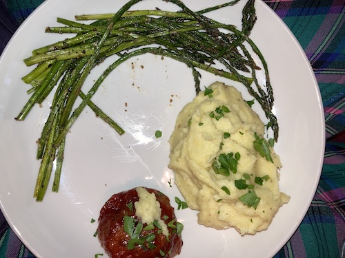

Glazed Meatloaf Cupcakes

Plate with Glazed Meatloaf Cupcakes and sides
Sometimes after getting home from a long day of work, all you want is some comfort food but you don't want to work hard for it. Meatloaf is already the perfect comfort food and not that hard to make, but meatloaf cupcakes are even faster and easier!
This meal comes together in less than an hour, with baking time being 25 minutes of that hour. During that time you can roast some veggies and warm up some bread to create a complete meal.
Ingredients
Meatloaf
- 2 eggs, whisked in a large bowl
- 1 onion, grate straight into bowl
- 2 carrots, grate straight into bowl
- 1 lb ground beef
- 1 tsp garlic powder
- 1 tsp dried oregano
- 1 tsp dried thyme
- 1 tsp kosher salt
- Pepper
- 1/4c ketchup
- 1/4c grated parmesan
- 1 TBSP Worcestershire
- 1/4c flat leaf parsley, finely chopped
- 1c breadcrumbs (I use panko)
Glaze
- 1c ketchup
- 1/4c brown sugar
- 1/4c apple cider vinegar
- 2 TBPS white vinegar
Steps
- Lightly spray 12 cup muffin tin and preheat oven to 350°.
- Add the rest of the meatloaf ingredients to the already prepared bowl.
- Mix until very well combined but be careful not to overmix.
- Weigh 2.5oz portions, roll into balls and place balls into the tin.
- Bake for 15 minutes.
- While loaves are in the oven, prepare the glaze by whisking all the ingredients together.
- After baking 15 minutes, use a brush and very liberally glaze the cupcakes.
- Bake another 10 minutes.
- Lightly boil the leftover glaze on the stove or in the microwave, while the cupcakes are on their final bake.
- Serve up glazed cupcakes with extra glaze on the side.
Side Ideas
- Mashed potatoes
- Roasted asparagus
- Roasted broccoli
- Side salad
- Dinner rolls
- Buttered toast